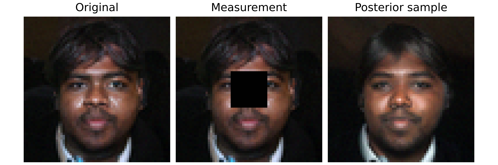
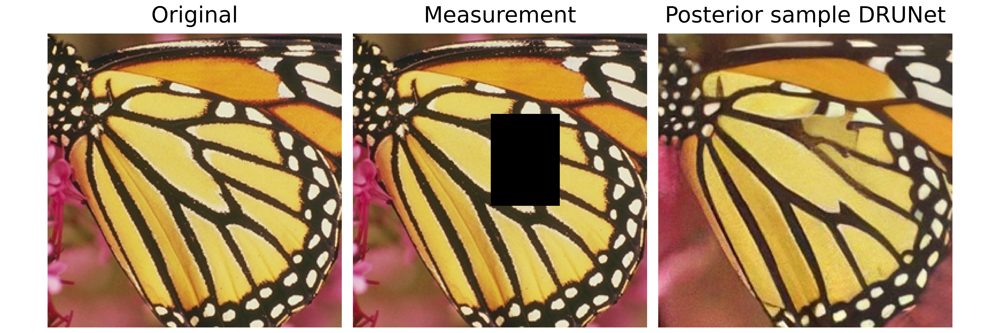

Note
New to DeepInverse? Get started with the basics with the 5 minute quickstart tutorial.
Building your diffusion posterior sampling method using SDEs#
This demo shows you how to use
deepinv.sampling.PosteriorDiffusion to perform posterior sampling. It also can be used to perform unconditional image generation with arbitrary denoisers, if the data fidelity term is not specified.
This method requires:
A well-trained denoiser with varying noise levels (ideally with large noise levels) (e.g.,
deepinv.models.NCSNpp).A (noisy) data fidelity term (e.g.,
deepinv.sampling.DPSDataFidelity).Define a drift term \(f(x, t)\) and a diffusion term \(g(t)\) for the forward-time SDE. They can be defined through the
deepinv.sampling.DiffusionSDE(e.g.,deepinv.sampling.VarianceExplodingDiffusion).
The deepinv.sampling.PosteriorDiffusion class can be used to perform posterior sampling for inverse problems.
Consider the acquisition model:
where \(\forw{x}\) is the forward operator (e.g., a convolutional operator) and \(\noise{\cdot}\) is the noise operator (e.g., Gaussian noise). This class defines the reverse-time SDE for the posterior distribution \(p(x|y)\) given the data \(y\):
where \(f\) is the drift term, \(g\) is the diffusion coefficient and \(w\) is the standard Brownian motion.
The drift term and the diffusion coefficient are defined by the underlying (unconditional) forward-time SDE sde.
In this example, we will use 2 well-known SDE in the literature: the Variance-Exploding (VE) and Variance-Preserving (VP or DDPM).
The (conditional) score function \(\nabla_{x_t} \log p_t(x_t | y)\) can be decomposed using the Bayes’ rule:
The first term is the score function of the unconditional SDE, which is typically approximated by an MMSE denoiser (denoiser) using the well-known Tweedie’s formula, while the
second term is approximated by the (noisy) data-fidelity term (data_fidelity).
We implement various data-fidelity terms in the user guide.
Note
In this demo, we limit the number of diffusion steps for the sake of speed, but in practice, you should use a larger number of steps to obtain better results.
Let us import the necessary modules, define the denoiser and the SDE.
In this first example, we use the Variance-Exploding SDE, whose forward process is defined as:
import torch
import deepinv as dinv
from deepinv.models import NCSNpp
device = "cuda" if torch.cuda.is_available() else "cpu"
dtype = torch.float64
figsize = 2.5
gif_frequency = 10 # Increase this value to save the GIF saving time
from deepinv.sampling import (
PosteriorDiffusion,
DPSDataFidelity,
EulerSolver,
VarianceExplodingDiffusion,
)
from deepinv.optim import ZeroFidelity
# In this example, we use the pre-trained FFHQ-64 model from the
# EDM framework: https://arxiv.org/pdf/2206.00364 .
# The network architecture is from Song et al: https://arxiv.org/abs/2011.13456 .
denoiser = NCSNpp(pretrained="download").to(device)
# The solution is obtained by calling the SDE object with a desired solver (here, Euler).
# The reproducibility of the SDE Solver class can be controlled by providing the pseudo-random number generator.
num_steps = 150
rng = torch.Generator(device).manual_seed(42)
timesteps = torch.linspace(1, 0.001, num_steps)
solver = EulerSolver(timesteps=timesteps, rng=rng)
sigma_min = 0.005
sigma_max = 5
sde = VarianceExplodingDiffusion(
sigma_max=sigma_max,
sigma_min=sigma_min,
alpha=0.5,
device=device,
dtype=dtype,
)
Downloading: "https://huggingface.co/deepinv/edm/resolve/main/ncsnpp-ffhq64-uncond-ve.pt?download=true" to /home/runner/.cache/torch/hub/checkpoints/ncsnpp-ffhq64-uncond-ve.pt
0%| | 0.00/240M [00:00<?, ?B/s]
12%|█▏ | 28.4M/240M [00:00<00:00, 297MB/s]
27%|██▋ | 64.1M/240M [00:00<00:00, 342MB/s]
42%|████▏ | 101M/240M [00:00<00:00, 363MB/s]
58%|█████▊ | 139M/240M [00:00<00:00, 376MB/s]
73%|███████▎ | 176M/240M [00:00<00:00, 380MB/s]
89%|████████▊ | 212M/240M [00:00<00:00, 356MB/s]
100%|██████████| 240M/240M [00:00<00:00, 352MB/s]
Reverse-time SDE as sampling process#
When the data fidelity is not given, the posterior diffusion is equivalent to the unconditional diffusion. Sampling is performed by solving the reverse-time SDE. To do so, we generate a reverse-time trajectory.
model = PosteriorDiffusion(
data_fidelity=ZeroFidelity(),
sde=sde,
denoiser=denoiser,
solver=solver,
dtype=dtype,
device=device,
verbose=True,
)
x, trajectory = model(
y=None,
physics=None,
x_init=(1, 3, 64, 64),
seed=1,
get_trajectory=True,
)
dinv.utils.plot(
x,
titles="Unconditional generation",
save_fn="sde_sample.png",
figsize=(figsize, figsize),
)
dinv.utils.save_videos(
trajectory.cpu()[::gif_frequency],
time_dim=0,
titles=["VE-SDE Trajectory"],
save_fn="sde_trajectory.gif",
figsize=(figsize, figsize),
)
0%| | 0/149 [00:00<?, ?it/s]
1%| | 1/149 [00:00<01:23, 1.77it/s]
1%|▏ | 2/149 [00:01<01:20, 1.83it/s]
2%|▏ | 3/149 [00:01<01:19, 1.83it/s]
3%|▎ | 4/149 [00:02<01:18, 1.84it/s]
3%|▎ | 5/149 [00:02<01:17, 1.85it/s]
4%|▍ | 6/149 [00:03<01:17, 1.85it/s]
5%|▍ | 7/149 [00:03<01:16, 1.86it/s]
5%|▌ | 8/149 [00:04<01:15, 1.86it/s]
6%|▌ | 9/149 [00:04<01:15, 1.86it/s]
7%|▋ | 10/149 [00:05<01:14, 1.86it/s]
7%|▋ | 11/149 [00:05<01:14, 1.86it/s]
8%|▊ | 12/149 [00:06<01:13, 1.86it/s]
9%|▊ | 13/149 [00:07<01:13, 1.86it/s]
9%|▉ | 14/149 [00:07<01:12, 1.85it/s]
10%|█ | 15/149 [00:08<01:12, 1.85it/s]
11%|█ | 16/149 [00:08<01:11, 1.85it/s]
11%|█▏ | 17/149 [00:09<01:11, 1.85it/s]
12%|█▏ | 18/149 [00:09<01:10, 1.85it/s]
13%|█▎ | 19/149 [00:10<01:10, 1.85it/s]
13%|█▎ | 20/149 [00:10<01:09, 1.85it/s]
14%|█▍ | 21/149 [00:11<01:09, 1.85it/s]
15%|█▍ | 22/149 [00:11<01:08, 1.85it/s]
15%|█▌ | 23/149 [00:12<01:08, 1.85it/s]
16%|█▌ | 24/149 [00:12<01:07, 1.85it/s]
17%|█▋ | 25/149 [00:13<01:06, 1.85it/s]
17%|█▋ | 26/149 [00:14<01:06, 1.85it/s]
18%|█▊ | 27/149 [00:14<01:05, 1.86it/s]
19%|█▉ | 28/149 [00:15<01:05, 1.86it/s]
19%|█▉ | 29/149 [00:15<01:04, 1.86it/s]
20%|██ | 30/149 [00:16<01:03, 1.86it/s]
21%|██ | 31/149 [00:16<01:03, 1.86it/s]
21%|██▏ | 32/149 [00:17<01:02, 1.86it/s]
22%|██▏ | 33/149 [00:17<01:02, 1.87it/s]
23%|██▎ | 34/149 [00:18<01:01, 1.87it/s]
23%|██▎ | 35/149 [00:18<01:01, 1.87it/s]
24%|██▍ | 36/149 [00:19<01:00, 1.86it/s]
25%|██▍ | 37/149 [00:19<01:00, 1.87it/s]
26%|██▌ | 38/149 [00:20<00:59, 1.86it/s]
26%|██▌ | 39/149 [00:21<00:59, 1.86it/s]
27%|██▋ | 40/149 [00:21<00:58, 1.86it/s]
28%|██▊ | 41/149 [00:22<00:58, 1.86it/s]
28%|██▊ | 42/149 [00:22<00:57, 1.86it/s]
29%|██▉ | 43/149 [00:23<00:56, 1.86it/s]
30%|██▉ | 44/149 [00:23<00:56, 1.86it/s]
30%|███ | 45/149 [00:24<00:55, 1.86it/s]
31%|███ | 46/149 [00:24<00:55, 1.86it/s]
32%|███▏ | 47/149 [00:25<00:54, 1.86it/s]
32%|███▏ | 48/149 [00:25<00:54, 1.86it/s]
33%|███▎ | 49/149 [00:26<00:53, 1.86it/s]
34%|███▎ | 50/149 [00:26<00:53, 1.86it/s]
34%|███▍ | 51/149 [00:27<00:52, 1.86it/s]
35%|███▍ | 52/149 [00:28<00:52, 1.86it/s]
36%|███▌ | 53/149 [00:28<00:51, 1.86it/s]
36%|███▌ | 54/149 [00:29<00:51, 1.86it/s]
37%|███▋ | 55/149 [00:29<00:50, 1.86it/s]
38%|███▊ | 56/149 [00:30<00:49, 1.86it/s]
38%|███▊ | 57/149 [00:30<00:49, 1.85it/s]
39%|███▉ | 58/149 [00:31<00:49, 1.84it/s]
40%|███▉ | 59/149 [00:31<00:48, 1.84it/s]
40%|████ | 60/149 [00:32<00:48, 1.85it/s]
41%|████ | 61/149 [00:32<00:47, 1.85it/s]
42%|████▏ | 62/149 [00:33<00:46, 1.85it/s]
42%|████▏ | 63/149 [00:33<00:46, 1.86it/s]
43%|████▎ | 64/149 [00:34<00:45, 1.86it/s]
44%|████▎ | 65/149 [00:35<00:45, 1.86it/s]
44%|████▍ | 66/149 [00:35<00:44, 1.86it/s]
45%|████▍ | 67/149 [00:36<00:44, 1.86it/s]
46%|████▌ | 68/149 [00:36<00:43, 1.86it/s]
46%|████▋ | 69/149 [00:37<00:42, 1.86it/s]
47%|████▋ | 70/149 [00:37<00:42, 1.86it/s]
48%|████▊ | 71/149 [00:38<00:41, 1.86it/s]
48%|████▊ | 72/149 [00:38<00:41, 1.86it/s]
49%|████▉ | 73/149 [00:39<00:40, 1.86it/s]
50%|████▉ | 74/149 [00:39<00:40, 1.86it/s]
50%|█████ | 75/149 [00:40<00:39, 1.86it/s]
51%|█████ | 76/149 [00:40<00:39, 1.86it/s]
52%|█████▏ | 77/149 [00:41<00:38, 1.86it/s]
52%|█████▏ | 78/149 [00:41<00:38, 1.86it/s]
53%|█████▎ | 79/149 [00:42<00:37, 1.86it/s]
54%|█████▎ | 80/149 [00:43<00:37, 1.86it/s]
54%|█████▍ | 81/149 [00:43<00:36, 1.86it/s]
55%|█████▌ | 82/149 [00:44<00:36, 1.86it/s]
56%|█████▌ | 83/149 [00:44<00:35, 1.86it/s]
56%|█████▋ | 84/149 [00:45<00:34, 1.86it/s]
57%|█████▋ | 85/149 [00:45<00:34, 1.86it/s]
58%|█████▊ | 86/149 [00:46<00:33, 1.86it/s]
58%|█████▊ | 87/149 [00:46<00:33, 1.86it/s]
59%|█████▉ | 88/149 [00:47<00:32, 1.86it/s]
60%|█████▉ | 89/149 [00:47<00:32, 1.86it/s]
60%|██████ | 90/149 [00:48<00:31, 1.86it/s]
61%|██████ | 91/149 [00:48<00:31, 1.86it/s]
62%|██████▏ | 92/149 [00:49<00:30, 1.86it/s]
62%|██████▏ | 93/149 [00:50<00:30, 1.86it/s]
63%|██████▎ | 94/149 [00:50<00:29, 1.86it/s]
64%|██████▍ | 95/149 [00:51<00:28, 1.86it/s]
64%|██████▍ | 96/149 [00:51<00:28, 1.86it/s]
65%|██████▌ | 97/149 [00:52<00:27, 1.86it/s]
66%|██████▌ | 98/149 [00:52<00:27, 1.86it/s]
66%|██████▋ | 99/149 [00:53<00:26, 1.86it/s]
67%|██████▋ | 100/149 [00:53<00:26, 1.86it/s]
68%|██████▊ | 101/149 [00:54<00:25, 1.86it/s]
68%|██████▊ | 102/149 [00:54<00:25, 1.86it/s]
69%|██████▉ | 103/149 [00:55<00:24, 1.86it/s]
70%|██████▉ | 104/149 [00:55<00:24, 1.87it/s]
70%|███████ | 105/149 [00:56<00:23, 1.86it/s]
71%|███████ | 106/149 [00:57<00:23, 1.86it/s]
72%|███████▏ | 107/149 [00:57<00:22, 1.86it/s]
72%|███████▏ | 108/149 [00:58<00:22, 1.86it/s]
73%|███████▎ | 109/149 [00:58<00:21, 1.86it/s]
74%|███████▍ | 110/149 [00:59<00:20, 1.86it/s]
74%|███████▍ | 111/149 [00:59<00:20, 1.86it/s]
75%|███████▌ | 112/149 [01:00<00:19, 1.85it/s]
76%|███████▌ | 113/149 [01:00<00:19, 1.85it/s]
77%|███████▋ | 114/149 [01:01<00:18, 1.85it/s]
77%|███████▋ | 115/149 [01:01<00:18, 1.85it/s]
78%|███████▊ | 116/149 [01:02<00:17, 1.85it/s]
79%|███████▊ | 117/149 [01:02<00:17, 1.86it/s]
79%|███████▉ | 118/149 [01:03<00:16, 1.86it/s]
80%|███████▉ | 119/149 [01:04<00:16, 1.86it/s]
81%|████████ | 120/149 [01:04<00:15, 1.86it/s]
81%|████████ | 121/149 [01:05<00:15, 1.86it/s]
82%|████████▏ | 122/149 [01:05<00:14, 1.86it/s]
83%|████████▎ | 123/149 [01:06<00:13, 1.86it/s]
83%|████████▎ | 124/149 [01:06<00:13, 1.86it/s]
84%|████████▍ | 125/149 [01:07<00:12, 1.86it/s]
85%|████████▍ | 126/149 [01:07<00:12, 1.86it/s]
85%|████████▌ | 127/149 [01:08<00:11, 1.86it/s]
86%|████████▌ | 128/149 [01:08<00:11, 1.86it/s]
87%|████████▋ | 129/149 [01:09<00:10, 1.86it/s]
87%|████████▋ | 130/149 [01:09<00:10, 1.86it/s]
88%|████████▊ | 131/149 [01:10<00:09, 1.86it/s]
89%|████████▊ | 132/149 [01:11<00:09, 1.86it/s]
89%|████████▉ | 133/149 [01:11<00:08, 1.86it/s]
90%|████████▉ | 134/149 [01:12<00:08, 1.86it/s]
91%|█████████ | 135/149 [01:12<00:07, 1.86it/s]
91%|█████████▏| 136/149 [01:13<00:07, 1.84it/s]
92%|█████████▏| 137/149 [01:13<00:06, 1.85it/s]
93%|█████████▎| 138/149 [01:14<00:05, 1.85it/s]
93%|█████████▎| 139/149 [01:14<00:05, 1.86it/s]
94%|█████████▍| 140/149 [01:15<00:04, 1.86it/s]
95%|█████████▍| 141/149 [01:15<00:04, 1.86it/s]
95%|█████████▌| 142/149 [01:16<00:03, 1.86it/s]
96%|█████████▌| 143/149 [01:16<00:03, 1.86it/s]
97%|█████████▋| 144/149 [01:17<00:02, 1.86it/s]
97%|█████████▋| 145/149 [01:18<00:02, 1.86it/s]
98%|█████████▊| 146/149 [01:18<00:01, 1.86it/s]
99%|█████████▊| 147/149 [01:19<00:01, 1.87it/s]
99%|█████████▉| 148/149 [01:19<00:00, 1.87it/s]
100%|██████████| 149/149 [01:20<00:00, 1.87it/s]
100%|██████████| 149/149 [01:20<00:00, 1.86it/s]
We obtain the following unconditional sample


When the data fidelity is given, together with the measurements and the physics, this class can be used to perform posterior sampling for inverse problems.
For example, consider the inpainting problem, where we have a noisy image and we want to recover the original image.
We can use the deepinv.sampling.DPSDataFidelity as the data fidelity term.
del trajectory # clean memory
mask = torch.ones_like(x)
mask[..., 24:40, 24:40] = 0.0
physics = dinv.physics.Inpainting(img_size=x.shape[1:], mask=mask, device=device)
y = physics(x)
weight = 1.0 # guidance strength
dps_fidelity = DPSDataFidelity(denoiser=denoiser, weight=weight)
model = PosteriorDiffusion(
data_fidelity=dps_fidelity,
denoiser=denoiser,
sde=sde,
solver=solver,
dtype=dtype,
device=device,
verbose=True,
)
# To perform posterior sampling, we need to provide the measurements, the physics and the solver.
# Moreover, when the physics is given, the initial point can be inferred from the physics if not given explicitly.
seed_1 = 11
x_hat, trajectory = model(
y,
physics,
seed=seed_1,
get_trajectory=True,
)
# Here, we plot the original image, the measurement and the posterior sample
dinv.utils.plot(
[x, y, x_hat],
show=True,
titles=["Original", "Measurement", "Posterior sample"],
save_fn="posterior_sample.png",
figsize=(figsize * 3, figsize),
)
# We can also save the trajectory of the posterior sample
dinv.utils.save_videos(
trajectory[::gif_frequency],
time_dim=0,
titles=["Posterior sample with VE"],
save_fn="posterior_trajectory.gif",
figsize=(figsize, figsize),
)
0%| | 0/149 [00:00<?, ?it/s]
1%| | 1/149 [00:01<04:01, 1.63s/it]
1%|▏ | 2/149 [00:03<03:56, 1.61s/it]
2%|▏ | 3/149 [00:04<03:53, 1.60s/it]
3%|▎ | 4/149 [00:06<03:51, 1.60s/it]
3%|▎ | 5/149 [00:07<03:49, 1.60s/it]
4%|▍ | 6/149 [00:09<03:48, 1.59s/it]
5%|▍ | 7/149 [00:11<03:46, 1.60s/it]
5%|▌ | 8/149 [00:12<03:45, 1.60s/it]
6%|▌ | 9/149 [00:14<03:43, 1.59s/it]
7%|▋ | 10/149 [00:15<03:41, 1.59s/it]
7%|▋ | 11/149 [00:17<03:39, 1.59s/it]
8%|▊ | 12/149 [00:19<03:38, 1.59s/it]
9%|▊ | 13/149 [00:20<03:36, 1.59s/it]
9%|▉ | 14/149 [00:22<03:35, 1.59s/it]
10%|█ | 15/149 [00:23<03:33, 1.59s/it]
11%|█ | 16/149 [00:25<03:31, 1.59s/it]
11%|█▏ | 17/149 [00:27<03:30, 1.59s/it]
12%|█▏ | 18/149 [00:28<03:28, 1.59s/it]
13%|█▎ | 19/149 [00:30<03:27, 1.59s/it]
13%|█▎ | 20/149 [00:31<03:25, 1.59s/it]
14%|█▍ | 21/149 [00:33<03:23, 1.59s/it]
15%|█▍ | 22/149 [00:35<03:22, 1.59s/it]
15%|█▌ | 23/149 [00:36<03:20, 1.59s/it]
16%|█▌ | 24/149 [00:38<03:19, 1.59s/it]
17%|█▋ | 25/149 [00:39<03:17, 1.59s/it]
17%|█▋ | 26/149 [00:41<03:16, 1.59s/it]
18%|█▊ | 27/149 [00:43<03:14, 1.59s/it]
19%|█▉ | 28/149 [00:44<03:12, 1.59s/it]
19%|█▉ | 29/149 [00:46<03:12, 1.60s/it]
20%|██ | 30/149 [00:47<03:10, 1.60s/it]
21%|██ | 31/149 [00:49<03:08, 1.60s/it]
21%|██▏ | 32/149 [00:51<03:06, 1.60s/it]
22%|██▏ | 33/149 [00:52<03:05, 1.60s/it]
23%|██▎ | 34/149 [00:54<03:03, 1.59s/it]
23%|██▎ | 35/149 [00:55<03:01, 1.59s/it]
24%|██▍ | 36/149 [00:57<02:59, 1.59s/it]
25%|██▍ | 37/149 [00:59<02:58, 1.60s/it]
26%|██▌ | 38/149 [01:00<02:57, 1.60s/it]
26%|██▌ | 39/149 [01:02<02:55, 1.60s/it]
27%|██▋ | 40/149 [01:03<02:53, 1.60s/it]
28%|██▊ | 41/149 [01:05<02:52, 1.60s/it]
28%|██▊ | 42/149 [01:06<02:50, 1.59s/it]
29%|██▉ | 43/149 [01:08<02:48, 1.59s/it]
30%|██▉ | 44/149 [01:10<02:47, 1.59s/it]
30%|███ | 45/149 [01:11<02:45, 1.59s/it]
31%|███ | 46/149 [01:13<02:45, 1.60s/it]
32%|███▏ | 47/149 [01:14<02:43, 1.60s/it]
32%|███▏ | 48/149 [01:16<02:41, 1.60s/it]
33%|███▎ | 49/149 [01:18<02:39, 1.60s/it]
34%|███▎ | 50/149 [01:19<02:37, 1.60s/it]
34%|███▍ | 51/149 [01:21<02:36, 1.60s/it]
35%|███▍ | 52/149 [01:22<02:34, 1.59s/it]
36%|███▌ | 53/149 [01:24<02:32, 1.59s/it]
36%|███▌ | 54/149 [01:26<02:31, 1.59s/it]
37%|███▋ | 55/149 [01:27<02:29, 1.59s/it]
38%|███▊ | 56/149 [01:29<02:28, 1.59s/it]
38%|███▊ | 57/149 [01:30<02:26, 1.59s/it]
39%|███▉ | 58/149 [01:32<02:24, 1.59s/it]
40%|███▉ | 59/149 [01:34<02:23, 1.59s/it]
40%|████ | 60/149 [01:35<02:21, 1.59s/it]
41%|████ | 61/149 [01:37<02:20, 1.59s/it]
42%|████▏ | 62/149 [01:38<02:18, 1.59s/it]
42%|████▏ | 63/149 [01:40<02:17, 1.59s/it]
43%|████▎ | 64/149 [01:42<02:15, 1.59s/it]
44%|████▎ | 65/149 [01:43<02:13, 1.59s/it]
44%|████▍ | 66/149 [01:45<02:12, 1.59s/it]
45%|████▍ | 67/149 [01:46<02:10, 1.59s/it]
46%|████▌ | 68/149 [01:48<02:09, 1.59s/it]
46%|████▋ | 69/149 [01:50<02:07, 1.60s/it]
47%|████▋ | 70/149 [01:51<02:06, 1.60s/it]
48%|████▊ | 71/149 [01:53<02:04, 1.60s/it]
48%|████▊ | 72/149 [01:54<02:03, 1.60s/it]
49%|████▉ | 73/149 [01:56<02:01, 1.60s/it]
50%|████▉ | 74/149 [01:58<01:59, 1.60s/it]
50%|█████ | 75/149 [01:59<01:58, 1.60s/it]
51%|█████ | 76/149 [02:01<01:56, 1.60s/it]
52%|█████▏ | 77/149 [02:02<01:55, 1.60s/it]
52%|█████▏ | 78/149 [02:04<01:53, 1.60s/it]
53%|█████▎ | 79/149 [02:06<01:51, 1.60s/it]
54%|█████▎ | 80/149 [02:07<01:50, 1.60s/it]
54%|█████▍ | 81/149 [02:09<01:48, 1.60s/it]
55%|█████▌ | 82/149 [02:10<01:47, 1.60s/it]
56%|█████▌ | 83/149 [02:12<01:45, 1.60s/it]
56%|█████▋ | 84/149 [02:14<01:43, 1.60s/it]
57%|█████▋ | 85/149 [02:15<01:42, 1.60s/it]
58%|█████▊ | 86/149 [02:17<01:40, 1.60s/it]
58%|█████▊ | 87/149 [02:18<01:38, 1.60s/it]
59%|█████▉ | 88/149 [02:20<01:37, 1.60s/it]
60%|█████▉ | 89/149 [02:22<01:35, 1.60s/it]
60%|██████ | 90/149 [02:23<01:34, 1.60s/it]
61%|██████ | 91/149 [02:25<01:32, 1.60s/it]
62%|██████▏ | 92/149 [02:26<01:30, 1.59s/it]
62%|██████▏ | 93/149 [02:28<01:29, 1.59s/it]
63%|██████▎ | 94/149 [02:29<01:27, 1.60s/it]
64%|██████▍ | 95/149 [02:31<01:26, 1.60s/it]
64%|██████▍ | 96/149 [02:33<01:24, 1.60s/it]
65%|██████▌ | 97/149 [02:34<01:22, 1.60s/it]
66%|██████▌ | 98/149 [02:36<01:21, 1.59s/it]
66%|██████▋ | 99/149 [02:37<01:19, 1.59s/it]
67%|██████▋ | 100/149 [02:39<01:18, 1.59s/it]
68%|██████▊ | 101/149 [02:41<01:16, 1.59s/it]
68%|██████▊ | 102/149 [02:42<01:14, 1.59s/it]
69%|██████▉ | 103/149 [02:44<01:13, 1.59s/it]
70%|██████▉ | 104/149 [02:45<01:11, 1.59s/it]
70%|███████ | 105/149 [02:47<01:10, 1.60s/it]
71%|███████ | 106/149 [02:49<01:08, 1.59s/it]
72%|███████▏ | 107/149 [02:50<01:06, 1.60s/it]
72%|███████▏ | 108/149 [02:52<01:05, 1.60s/it]
73%|███████▎ | 109/149 [02:53<01:04, 1.60s/it]
74%|███████▍ | 110/149 [02:55<01:02, 1.60s/it]
74%|███████▍ | 111/149 [02:57<01:00, 1.60s/it]
75%|███████▌ | 112/149 [02:58<00:59, 1.60s/it]
76%|███████▌ | 113/149 [03:00<00:57, 1.60s/it]
77%|███████▋ | 114/149 [03:01<00:56, 1.60s/it]
77%|███████▋ | 115/149 [03:03<00:54, 1.60s/it]
78%|███████▊ | 116/149 [03:05<00:52, 1.60s/it]
79%|███████▊ | 117/149 [03:06<00:51, 1.60s/it]
79%|███████▉ | 118/149 [03:08<00:49, 1.60s/it]
80%|███████▉ | 119/149 [03:09<00:48, 1.60s/it]
81%|████████ | 120/149 [03:11<00:46, 1.61s/it]
81%|████████ | 121/149 [03:13<00:44, 1.61s/it]
82%|████████▏ | 122/149 [03:14<00:43, 1.61s/it]
83%|████████▎ | 123/149 [03:16<00:41, 1.61s/it]
83%|████████▎ | 124/149 [03:17<00:40, 1.60s/it]
84%|████████▍ | 125/149 [03:19<00:38, 1.60s/it]
85%|████████▍ | 126/149 [03:21<00:36, 1.60s/it]
85%|████████▌ | 127/149 [03:22<00:35, 1.60s/it]
86%|████████▌ | 128/149 [03:24<00:33, 1.60s/it]
87%|████████▋ | 129/149 [03:25<00:31, 1.60s/it]
87%|████████▋ | 130/149 [03:27<00:30, 1.60s/it]
88%|████████▊ | 131/149 [03:29<00:28, 1.60s/it]
89%|████████▊ | 132/149 [03:30<00:27, 1.60s/it]
89%|████████▉ | 133/149 [03:32<00:25, 1.60s/it]
90%|████████▉ | 134/149 [03:33<00:23, 1.60s/it]
91%|█████████ | 135/149 [03:35<00:22, 1.60s/it]
91%|█████████▏| 136/149 [03:37<00:20, 1.60s/it]
92%|█████████▏| 137/149 [03:38<00:19, 1.60s/it]
93%|█████████▎| 138/149 [03:40<00:17, 1.60s/it]
93%|█████████▎| 139/149 [03:41<00:15, 1.60s/it]
94%|█████████▍| 140/149 [03:43<00:14, 1.59s/it]
95%|█████████▍| 141/149 [03:45<00:12, 1.60s/it]
95%|█████████▌| 142/149 [03:46<00:11, 1.60s/it]
96%|█████████▌| 143/149 [03:48<00:09, 1.60s/it]
97%|█████████▋| 144/149 [03:49<00:07, 1.60s/it]
97%|█████████▋| 145/149 [03:51<00:06, 1.60s/it]
98%|█████████▊| 146/149 [03:53<00:04, 1.60s/it]
99%|█████████▊| 147/149 [03:54<00:03, 1.59s/it]
99%|█████████▉| 148/149 [03:56<00:01, 1.60s/it]
100%|██████████| 149/149 [03:57<00:00, 1.60s/it]
100%|██████████| 149/149 [03:57<00:00, 1.60s/it]
We obtain the following posterior sample and trajectory


Note
Reproducibility: To ensure the reproducibility, if the parameter rng is given, the same sample will
be generated when the same seed is used.
One can obtain varying samples by using a different seed.
Parallel sampling: one can draw multiple samples in parallel by giving the initial shape, e.g., x_init = (B, C, H, W)
Varying the SDE#
One can also change the underlying SDE for sampling.
For example, we can also use the Variance-Preserving (VP or DDPM) in deepinv.sampling.VariancePreservingDiffusion, whose forward drift and diffusion term are defined as:
from deepinv.sampling import VariancePreservingDiffusion
del trajectory
sde = VariancePreservingDiffusion(device=device, dtype=dtype)
model = PosteriorDiffusion(
data_fidelity=dps_fidelity,
denoiser=denoiser,
sde=sde,
solver=solver,
device=device,
dtype=dtype,
verbose=True,
)
x_hat_vp, trajectory = model(
y,
physics,
seed=111,
timesteps=torch.linspace(1, 0.001, 150),
get_trajectory=True,
)
dinv.utils.plot(
[x_hat, x_hat_vp],
titles=[
"posterior sample with VE",
"posterior sample with VP",
],
save_fn="posterior_sample_ve_vp.png",
figsize=(figsize * 3, figsize),
)
# We can also save the trajectory of the posterior sample
dinv.utils.save_videos(
trajectory[::gif_frequency],
time_dim=0,
titles=["Posterior sample with VP"],
save_fn="posterior_trajectory_vp.gif",
figsize=(figsize, figsize),
)
0%| | 0/149 [00:00<?, ?it/s]
1%| | 1/149 [00:01<04:01, 1.63s/it]
1%|▏ | 2/149 [00:03<03:59, 1.63s/it]
2%|▏ | 3/149 [00:04<03:56, 1.62s/it]
3%|▎ | 4/149 [00:06<03:54, 1.62s/it]
3%|▎ | 5/149 [00:08<03:52, 1.61s/it]
4%|▍ | 6/149 [00:09<03:50, 1.61s/it]
5%|▍ | 7/149 [00:11<03:48, 1.61s/it]
5%|▌ | 8/149 [00:12<03:46, 1.60s/it]
6%|▌ | 9/149 [00:14<03:44, 1.60s/it]
7%|▋ | 10/149 [00:16<03:42, 1.60s/it]
7%|▋ | 11/149 [00:17<03:41, 1.61s/it]
8%|▊ | 12/149 [00:19<03:39, 1.61s/it]
9%|▊ | 13/149 [00:20<03:38, 1.60s/it]
9%|▉ | 14/149 [00:22<03:36, 1.60s/it]
10%|█ | 15/149 [00:24<03:34, 1.60s/it]
11%|█ | 16/149 [00:25<03:33, 1.60s/it]
11%|█▏ | 17/149 [00:27<03:31, 1.60s/it]
12%|█▏ | 18/149 [00:28<03:30, 1.60s/it]
13%|█▎ | 19/149 [00:30<03:28, 1.60s/it]
13%|█▎ | 20/149 [00:32<03:26, 1.60s/it]
14%|█▍ | 21/149 [00:33<03:25, 1.60s/it]
15%|█▍ | 22/149 [00:35<03:23, 1.60s/it]
15%|█▌ | 23/149 [00:36<03:21, 1.60s/it]
16%|█▌ | 24/149 [00:38<03:20, 1.60s/it]
17%|█▋ | 25/149 [00:40<03:18, 1.60s/it]
17%|█▋ | 26/149 [00:41<03:17, 1.60s/it]
18%|█▊ | 27/149 [00:43<03:16, 1.61s/it]
19%|█▉ | 28/149 [00:44<03:14, 1.61s/it]
19%|█▉ | 29/149 [00:46<03:12, 1.61s/it]
20%|██ | 30/149 [00:48<03:11, 1.61s/it]
21%|██ | 31/149 [00:49<03:09, 1.61s/it]
21%|██▏ | 32/149 [00:51<03:07, 1.61s/it]
22%|██▏ | 33/149 [00:53<03:06, 1.60s/it]
23%|██▎ | 34/149 [00:54<03:04, 1.60s/it]
23%|██▎ | 35/149 [00:56<03:02, 1.60s/it]
24%|██▍ | 36/149 [00:57<03:01, 1.60s/it]
25%|██▍ | 37/149 [00:59<02:59, 1.60s/it]
26%|██▌ | 38/149 [01:01<02:58, 1.60s/it]
26%|██▌ | 39/149 [01:02<02:56, 1.60s/it]
27%|██▋ | 40/149 [01:04<02:54, 1.60s/it]
28%|██▊ | 41/149 [01:05<02:53, 1.60s/it]
28%|██▊ | 42/149 [01:07<02:51, 1.60s/it]
29%|██▉ | 43/149 [01:09<02:49, 1.60s/it]
30%|██▉ | 44/149 [01:10<02:48, 1.60s/it]
30%|███ | 45/149 [01:12<02:46, 1.60s/it]
31%|███ | 46/149 [01:13<02:44, 1.60s/it]
32%|███▏ | 47/149 [01:15<02:43, 1.60s/it]
32%|███▏ | 48/149 [01:17<02:41, 1.60s/it]
33%|███▎ | 49/149 [01:18<02:40, 1.60s/it]
34%|███▎ | 50/149 [01:20<02:38, 1.60s/it]
34%|███▍ | 51/149 [01:21<02:37, 1.61s/it]
35%|███▍ | 52/149 [01:23<02:35, 1.61s/it]
36%|███▌ | 53/149 [01:25<02:33, 1.60s/it]
36%|███▌ | 54/149 [01:26<02:32, 1.60s/it]
37%|███▋ | 55/149 [01:28<02:30, 1.60s/it]
38%|███▊ | 56/149 [01:29<02:29, 1.60s/it]
38%|███▊ | 57/149 [01:31<02:27, 1.61s/it]
39%|███▉ | 58/149 [01:33<02:26, 1.61s/it]
40%|███▉ | 59/149 [01:34<02:24, 1.61s/it]
40%|████ | 60/149 [01:36<02:23, 1.61s/it]
41%|████ | 61/149 [01:37<02:21, 1.60s/it]
42%|████▏ | 62/149 [01:39<02:19, 1.61s/it]
42%|████▏ | 63/149 [01:41<02:18, 1.61s/it]
43%|████▎ | 64/149 [01:42<02:16, 1.60s/it]
44%|████▎ | 65/149 [01:44<02:14, 1.60s/it]
44%|████▍ | 66/149 [01:45<02:13, 1.61s/it]
45%|████▍ | 67/149 [01:47<02:11, 1.61s/it]
46%|████▌ | 68/149 [01:49<02:10, 1.61s/it]
46%|████▋ | 69/149 [01:50<02:08, 1.61s/it]
47%|████▋ | 70/149 [01:52<02:07, 1.61s/it]
48%|████▊ | 71/149 [01:53<02:05, 1.61s/it]
48%|████▊ | 72/149 [01:55<02:03, 1.61s/it]
49%|████▉ | 73/149 [01:57<02:02, 1.61s/it]
50%|████▉ | 74/149 [01:58<02:00, 1.61s/it]
50%|█████ | 75/149 [02:00<01:58, 1.61s/it]
51%|█████ | 76/149 [02:02<01:57, 1.61s/it]
52%|█████▏ | 77/149 [02:03<01:55, 1.61s/it]
52%|█████▏ | 78/149 [02:05<01:53, 1.60s/it]
53%|█████▎ | 79/149 [02:06<01:52, 1.60s/it]
54%|█████▎ | 80/149 [02:08<01:50, 1.60s/it]
54%|█████▍ | 81/149 [02:10<01:49, 1.61s/it]
55%|█████▌ | 82/149 [02:11<01:47, 1.61s/it]
56%|█████▌ | 83/149 [02:13<01:45, 1.61s/it]
56%|█████▋ | 84/149 [02:14<01:44, 1.60s/it]
57%|█████▋ | 85/149 [02:16<01:42, 1.61s/it]
58%|█████▊ | 86/149 [02:18<01:41, 1.61s/it]
58%|█████▊ | 87/149 [02:19<01:39, 1.61s/it]
59%|█████▉ | 88/149 [02:21<01:38, 1.61s/it]
60%|█████▉ | 89/149 [02:22<01:36, 1.61s/it]
60%|██████ | 90/149 [02:24<01:34, 1.61s/it]
61%|██████ | 91/149 [02:26<01:33, 1.60s/it]
62%|██████▏ | 92/149 [02:27<01:31, 1.60s/it]
62%|██████▏ | 93/149 [02:29<01:29, 1.60s/it]
63%|██████▎ | 94/149 [02:30<01:28, 1.60s/it]
64%|██████▍ | 95/149 [02:32<01:26, 1.60s/it]
64%|██████▍ | 96/149 [02:34<01:25, 1.61s/it]
65%|██████▌ | 97/149 [02:35<01:23, 1.61s/it]
66%|██████▌ | 98/149 [02:37<01:22, 1.61s/it]
66%|██████▋ | 99/149 [02:38<01:20, 1.61s/it]
67%|██████▋ | 100/149 [02:40<01:19, 1.61s/it]
68%|██████▊ | 101/149 [02:42<01:17, 1.61s/it]
68%|██████▊ | 102/149 [02:43<01:15, 1.61s/it]
69%|██████▉ | 103/149 [02:45<01:14, 1.61s/it]
70%|██████▉ | 104/149 [02:47<01:12, 1.61s/it]
70%|███████ | 105/149 [02:48<01:11, 1.62s/it]
71%|███████ | 106/149 [02:50<01:09, 1.62s/it]
72%|███████▏ | 107/149 [02:51<01:07, 1.62s/it]
72%|███████▏ | 108/149 [02:53<01:06, 1.62s/it]
73%|███████▎ | 109/149 [02:55<01:04, 1.62s/it]
74%|███████▍ | 110/149 [02:56<01:03, 1.62s/it]
74%|███████▍ | 111/149 [02:58<01:01, 1.62s/it]
75%|███████▌ | 112/149 [02:59<00:59, 1.62s/it]
76%|███████▌ | 113/149 [03:01<00:58, 1.62s/it]
77%|███████▋ | 114/149 [03:03<00:56, 1.62s/it]
77%|███████▋ | 115/149 [03:04<00:54, 1.62s/it]
78%|███████▊ | 116/149 [03:06<00:53, 1.61s/it]
79%|███████▊ | 117/149 [03:08<00:51, 1.61s/it]
79%|███████▉ | 118/149 [03:09<00:49, 1.61s/it]
80%|███████▉ | 119/149 [03:11<00:48, 1.61s/it]
81%|████████ | 120/149 [03:12<00:46, 1.61s/it]
81%|████████ | 121/149 [03:14<00:45, 1.61s/it]
82%|████████▏ | 122/149 [03:16<00:43, 1.61s/it]
83%|████████▎ | 123/149 [03:17<00:41, 1.61s/it]
83%|████████▎ | 124/149 [03:19<00:40, 1.61s/it]
84%|████████▍ | 125/149 [03:20<00:38, 1.61s/it]
85%|████████▍ | 126/149 [03:22<00:36, 1.61s/it]
85%|████████▌ | 127/149 [03:24<00:35, 1.61s/it]
86%|████████▌ | 128/149 [03:25<00:33, 1.61s/it]
87%|████████▋ | 129/149 [03:27<00:32, 1.61s/it]
87%|████████▋ | 130/149 [03:28<00:30, 1.61s/it]
88%|████████▊ | 131/149 [03:30<00:28, 1.61s/it]
89%|████████▊ | 132/149 [03:32<00:27, 1.61s/it]
89%|████████▉ | 133/149 [03:33<00:25, 1.61s/it]
90%|████████▉ | 134/149 [03:35<00:24, 1.61s/it]
91%|█████████ | 135/149 [03:36<00:22, 1.61s/it]
91%|█████████▏| 136/149 [03:38<00:20, 1.61s/it]
92%|█████████▏| 137/149 [03:40<00:19, 1.61s/it]
93%|█████████▎| 138/149 [03:41<00:17, 1.61s/it]
93%|█████████▎| 139/149 [03:43<00:16, 1.61s/it]
94%|█████████▍| 140/149 [03:44<00:14, 1.61s/it]
95%|█████████▍| 141/149 [03:46<00:12, 1.61s/it]
95%|█████████▌| 142/149 [03:48<00:11, 1.61s/it]
96%|█████████▌| 143/149 [03:49<00:09, 1.61s/it]
97%|█████████▋| 144/149 [03:51<00:08, 1.61s/it]
97%|█████████▋| 145/149 [03:53<00:06, 1.61s/it]
98%|█████████▊| 146/149 [03:54<00:04, 1.61s/it]
99%|█████████▊| 147/149 [03:56<00:03, 1.61s/it]
99%|█████████▉| 148/149 [03:57<00:01, 1.61s/it]
100%|██████████| 149/149 [03:59<00:00, 1.61s/it]
100%|██████████| 149/149 [03:59<00:00, 1.61s/it]
We can comparing the sampling trajectory depending on the underlying SDE

Plug-and-play Posterior Sampling with arbitrary denoisers#
The deepinv.sampling.PosteriorDiffusion class can be used together with any (well-trained) denoisers for posterior sampling.
For example, we can use the deepinv.models.DRUNet for posterior sampling.
We can also change the underlying SDE, for example change the sigma_max value.
del trajectory # clean memory
sigma_min = 0.001
sigma_max = 10.0
rng = torch.Generator(device)
dtype = torch.float32
timesteps = torch.linspace(1, 0.001, 250)
solver = EulerSolver(timesteps=timesteps, rng=rng)
denoiser = dinv.models.DRUNet(pretrained="download").to(device)
sde = VarianceExplodingDiffusion(
sigma_max=sigma_max, sigma_min=sigma_min, alpha=0.75, device=device, dtype=dtype
)
x = dinv.utils.load_example(
"butterfly.png",
img_size=256,
resize_mode="resize",
).to(device)
mask = torch.ones_like(x)
mask[..., 70:150, 120:180] = 0
physics = dinv.physics.Inpainting(
mask=mask,
img_size=x.shape[1:],
device=device,
)
y = physics(x)
model = PosteriorDiffusion(
data_fidelity=DPSDataFidelity(denoiser=denoiser, weight=0.3),
denoiser=denoiser,
sde=sde,
solver=solver,
dtype=dtype,
device=device,
verbose=True,
)
# To perform posterior sampling, we need to provide the measurements, the physics and the solver.
x_hat, trajectory = model(
y=y,
physics=physics,
seed=12,
get_trajectory=True,
)
# Here, we plot the original image, the measurement and the posterior sample
dinv.utils.plot(
[x, y, x_hat.clip(0, 1)],
titles=["Original", "Measurement", "Posterior sample DRUNet"],
figsize=(figsize * 3, figsize),
save_fn="posterior_sample_DRUNet.png",
)
# We can also save the trajectory of the posterior sample
dinv.utils.save_videos(
trajectory[::gif_frequency].clip(0, 1),
time_dim=0,
titles=["Posterior trajectory DRUNet"],
save_fn="posterior_sample_DRUNet.gif",
figsize=(figsize, figsize),
)
0%| | 0/249 [00:00<?, ?it/s]
0%| | 1/249 [00:04<19:49, 4.80s/it]
1%| | 2/249 [00:09<19:47, 4.81s/it]
1%| | 3/249 [00:14<19:45, 4.82s/it]
2%|▏ | 4/249 [00:19<19:36, 4.80s/it]
2%|▏ | 5/249 [00:24<19:30, 4.80s/it]
2%|▏ | 6/249 [00:28<19:24, 4.79s/it]
3%|▎ | 7/249 [00:33<19:17, 4.78s/it]
3%|▎ | 8/249 [00:38<19:13, 4.79s/it]
4%|▎ | 9/249 [00:43<19:09, 4.79s/it]
4%|▍ | 10/249 [00:47<19:06, 4.80s/it]
4%|▍ | 11/249 [00:52<18:59, 4.79s/it]
5%|▍ | 12/249 [00:57<18:56, 4.79s/it]
5%|▌ | 13/249 [01:02<18:50, 4.79s/it]
6%|▌ | 14/249 [01:07<18:45, 4.79s/it]
6%|▌ | 15/249 [01:11<18:43, 4.80s/it]
6%|▋ | 16/249 [01:16<18:39, 4.81s/it]
7%|▋ | 17/249 [01:21<18:34, 4.81s/it]
7%|▋ | 18/249 [01:26<18:28, 4.80s/it]
8%|▊ | 19/249 [01:31<18:22, 4.79s/it]
8%|▊ | 20/249 [01:35<18:18, 4.80s/it]
8%|▊ | 21/249 [01:40<18:13, 4.80s/it]
9%|▉ | 22/249 [01:45<18:09, 4.80s/it]
9%|▉ | 23/249 [01:50<18:06, 4.81s/it]
10%|▉ | 24/249 [01:55<17:59, 4.80s/it]
10%|█ | 25/249 [01:59<17:53, 4.79s/it]
10%|█ | 26/249 [02:04<17:48, 4.79s/it]
11%|█ | 27/249 [02:09<17:42, 4.79s/it]
11%|█ | 28/249 [02:14<17:37, 4.79s/it]
12%|█▏ | 29/249 [02:19<17:33, 4.79s/it]
12%|█▏ | 30/249 [02:23<17:28, 4.79s/it]
12%|█▏ | 31/249 [02:28<17:24, 4.79s/it]
13%|█▎ | 32/249 [02:33<17:18, 4.78s/it]
13%|█▎ | 33/249 [02:38<17:13, 4.79s/it]
14%|█▎ | 34/249 [02:42<17:09, 4.79s/it]
14%|█▍ | 35/249 [02:47<17:06, 4.80s/it]
14%|█▍ | 36/249 [02:52<17:02, 4.80s/it]
15%|█▍ | 37/249 [02:57<16:57, 4.80s/it]
15%|█▌ | 38/249 [03:02<16:53, 4.80s/it]
16%|█▌ | 39/249 [03:07<16:49, 4.81s/it]
16%|█▌ | 40/249 [03:11<16:45, 4.81s/it]
16%|█▋ | 41/249 [03:16<16:40, 4.81s/it]
17%|█▋ | 42/249 [03:21<16:36, 4.81s/it]
17%|█▋ | 43/249 [03:26<16:33, 4.82s/it]
18%|█▊ | 44/249 [03:31<16:28, 4.82s/it]
18%|█▊ | 45/249 [03:35<16:23, 4.82s/it]
18%|█▊ | 46/249 [03:40<16:18, 4.82s/it]
19%|█▉ | 47/249 [03:45<16:10, 4.80s/it]
19%|█▉ | 48/249 [03:50<16:05, 4.81s/it]
20%|█▉ | 49/249 [03:55<16:01, 4.81s/it]
20%|██ | 50/249 [03:59<15:55, 4.80s/it]
20%|██ | 51/249 [04:04<15:49, 4.79s/it]
21%|██ | 52/249 [04:09<15:45, 4.80s/it]
21%|██▏ | 53/249 [04:14<15:41, 4.80s/it]
22%|██▏ | 54/249 [04:19<15:37, 4.81s/it]
22%|██▏ | 55/249 [04:23<15:32, 4.81s/it]
22%|██▏ | 56/249 [04:28<15:27, 4.81s/it]
23%|██▎ | 57/249 [04:33<15:21, 4.80s/it]
23%|██▎ | 58/249 [04:38<15:15, 4.79s/it]
24%|██▎ | 59/249 [04:43<15:11, 4.80s/it]
24%|██▍ | 60/249 [04:47<15:07, 4.80s/it]
24%|██▍ | 61/249 [04:52<15:03, 4.80s/it]
25%|██▍ | 62/249 [04:57<14:56, 4.79s/it]
25%|██▌ | 63/249 [05:02<14:52, 4.80s/it]
26%|██▌ | 64/249 [05:07<14:48, 4.81s/it]
26%|██▌ | 65/249 [05:11<14:43, 4.80s/it]
27%|██▋ | 66/249 [05:16<14:39, 4.80s/it]
27%|██▋ | 67/249 [05:21<14:34, 4.80s/it]
27%|██▋ | 68/249 [05:26<14:29, 4.80s/it]
28%|██▊ | 69/249 [05:31<14:24, 4.80s/it]
28%|██▊ | 70/249 [05:36<14:22, 4.82s/it]
29%|██▊ | 71/249 [05:40<14:17, 4.82s/it]
29%|██▉ | 72/249 [05:45<14:11, 4.81s/it]
29%|██▉ | 73/249 [05:50<14:06, 4.81s/it]
30%|██▉ | 74/249 [05:55<14:01, 4.81s/it]
30%|███ | 75/249 [06:00<13:56, 4.81s/it]
31%|███ | 76/249 [06:04<13:51, 4.81s/it]
31%|███ | 77/249 [06:09<13:47, 4.81s/it]
31%|███▏ | 78/249 [06:14<13:42, 4.81s/it]
32%|███▏ | 79/249 [06:19<13:38, 4.81s/it]
32%|███▏ | 80/249 [06:24<13:33, 4.81s/it]
33%|███▎ | 81/249 [06:28<13:28, 4.81s/it]
33%|███▎ | 82/249 [06:33<13:23, 4.81s/it]
33%|███▎ | 83/249 [06:38<13:19, 4.82s/it]
34%|███▎ | 84/249 [06:43<13:15, 4.82s/it]
34%|███▍ | 85/249 [06:48<13:09, 4.82s/it]
35%|███▍ | 86/249 [06:53<13:04, 4.81s/it]
35%|███▍ | 87/249 [06:57<12:59, 4.81s/it]
35%|███▌ | 88/249 [07:02<12:54, 4.81s/it]
36%|███▌ | 89/249 [07:07<12:49, 4.81s/it]
36%|███▌ | 90/249 [07:12<12:45, 4.81s/it]
37%|███▋ | 91/249 [07:17<12:40, 4.81s/it]
37%|███▋ | 92/249 [07:21<12:35, 4.81s/it]
37%|███▋ | 93/249 [07:26<12:30, 4.81s/it]
38%|███▊ | 94/249 [07:31<12:25, 4.81s/it]
38%|███▊ | 95/249 [07:36<12:21, 4.82s/it]
39%|███▊ | 96/249 [07:41<12:16, 4.81s/it]
39%|███▉ | 97/249 [07:45<12:11, 4.81s/it]
39%|███▉ | 98/249 [07:50<12:07, 4.82s/it]
40%|███▉ | 99/249 [07:55<12:02, 4.82s/it]
40%|████ | 100/249 [08:00<11:57, 4.82s/it]
41%|████ | 101/249 [08:05<11:53, 4.82s/it]
41%|████ | 102/249 [08:10<11:48, 4.82s/it]
41%|████▏ | 103/249 [08:14<11:43, 4.82s/it]
42%|████▏ | 104/249 [08:19<11:39, 4.83s/it]
42%|████▏ | 105/249 [08:24<11:34, 4.83s/it]
43%|████▎ | 106/249 [08:29<11:30, 4.83s/it]
43%|████▎ | 107/249 [08:34<11:26, 4.83s/it]
43%|████▎ | 108/249 [08:39<11:22, 4.84s/it]
44%|████▍ | 109/249 [08:43<11:16, 4.83s/it]
44%|████▍ | 110/249 [08:48<11:12, 4.83s/it]
45%|████▍ | 111/249 [08:53<11:06, 4.83s/it]
45%|████▍ | 112/249 [08:58<11:02, 4.84s/it]
45%|████▌ | 113/249 [09:03<10:57, 4.84s/it]
46%|████▌ | 114/249 [09:08<10:53, 4.84s/it]
46%|████▌ | 115/249 [09:12<10:48, 4.84s/it]
47%|████▋ | 116/249 [09:17<10:44, 4.85s/it]
47%|████▋ | 117/249 [09:22<10:39, 4.85s/it]
47%|████▋ | 118/249 [09:27<10:34, 4.85s/it]
48%|████▊ | 119/249 [09:32<10:29, 4.85s/it]
48%|████▊ | 120/249 [09:37<10:25, 4.85s/it]
49%|████▊ | 121/249 [09:42<10:20, 4.85s/it]
49%|████▉ | 122/249 [09:46<10:15, 4.85s/it]
49%|████▉ | 123/249 [09:51<10:10, 4.85s/it]
50%|████▉ | 124/249 [09:56<10:05, 4.85s/it]
50%|█████ | 125/249 [10:01<10:01, 4.85s/it]
51%|█████ | 126/249 [10:06<09:56, 4.85s/it]
51%|█████ | 127/249 [10:11<09:51, 4.85s/it]
51%|█████▏ | 128/249 [10:16<09:46, 4.85s/it]
52%|█████▏ | 129/249 [10:20<09:42, 4.85s/it]
52%|█████▏ | 130/249 [10:25<09:37, 4.85s/it]
53%|█████▎ | 131/249 [10:30<09:33, 4.86s/it]
53%|█████▎ | 132/249 [10:35<09:28, 4.86s/it]
53%|█████▎ | 133/249 [10:40<09:23, 4.86s/it]
54%|█████▍ | 134/249 [10:45<09:20, 4.88s/it]
54%|█████▍ | 135/249 [10:50<09:16, 4.88s/it]
55%|█████▍ | 136/249 [10:54<09:10, 4.87s/it]
55%|█████▌ | 137/249 [10:59<09:04, 4.87s/it]
55%|█████▌ | 138/249 [11:04<08:59, 4.86s/it]
56%|█████▌ | 139/249 [11:09<08:55, 4.87s/it]
56%|█████▌ | 140/249 [11:14<08:50, 4.86s/it]
57%|█████▋ | 141/249 [11:19<08:46, 4.87s/it]
57%|█████▋ | 142/249 [11:24<08:40, 4.87s/it]
57%|█████▋ | 143/249 [11:28<08:35, 4.86s/it]
58%|█████▊ | 144/249 [11:33<08:30, 4.86s/it]
58%|█████▊ | 145/249 [11:38<08:25, 4.86s/it]
59%|█████▊ | 146/249 [11:43<08:20, 4.86s/it]
59%|█████▉ | 147/249 [11:48<08:15, 4.86s/it]
59%|█████▉ | 148/249 [11:53<08:11, 4.86s/it]
60%|█████▉ | 149/249 [11:58<08:06, 4.87s/it]
60%|██████ | 150/249 [12:03<08:02, 4.88s/it]
61%|██████ | 151/249 [12:07<07:57, 4.87s/it]
61%|██████ | 152/249 [12:12<07:53, 4.88s/it]
61%|██████▏ | 153/249 [12:17<07:47, 4.87s/it]
62%|██████▏ | 154/249 [12:22<07:42, 4.87s/it]
62%|██████▏ | 155/249 [12:27<07:37, 4.86s/it]
63%|██████▎ | 156/249 [12:32<07:31, 4.86s/it]
63%|██████▎ | 157/249 [12:37<07:27, 4.87s/it]
63%|██████▎ | 158/249 [12:41<07:22, 4.87s/it]
64%|██████▍ | 159/249 [12:46<07:17, 4.86s/it]
64%|██████▍ | 160/249 [12:51<07:12, 4.86s/it]
65%|██████▍ | 161/249 [12:56<07:07, 4.86s/it]
65%|██████▌ | 162/249 [13:01<07:02, 4.86s/it]
65%|██████▌ | 163/249 [13:06<06:57, 4.86s/it]
66%|██████▌ | 164/249 [13:11<06:52, 4.85s/it]
66%|██████▋ | 165/249 [13:16<06:49, 4.87s/it]
67%|██████▋ | 166/249 [13:20<06:44, 4.87s/it]
67%|██████▋ | 167/249 [13:25<06:38, 4.86s/it]
67%|██████▋ | 168/249 [13:30<06:33, 4.86s/it]
68%|██████▊ | 169/249 [13:35<06:28, 4.86s/it]
68%|██████▊ | 170/249 [13:40<06:23, 4.86s/it]
69%|██████▊ | 171/249 [13:45<06:18, 4.86s/it]
69%|██████▉ | 172/249 [13:50<06:13, 4.85s/it]
69%|██████▉ | 173/249 [13:54<06:08, 4.85s/it]
70%|██████▉ | 174/249 [13:59<06:04, 4.85s/it]
70%|███████ | 175/249 [14:04<05:59, 4.85s/it]
71%|███████ | 176/249 [14:09<05:54, 4.85s/it]
71%|███████ | 177/249 [14:14<05:49, 4.85s/it]
71%|███████▏ | 178/249 [14:19<05:44, 4.85s/it]
72%|███████▏ | 179/249 [14:23<05:39, 4.85s/it]
72%|███████▏ | 180/249 [14:28<05:34, 4.85s/it]
73%|███████▎ | 181/249 [14:33<05:29, 4.85s/it]
73%|███████▎ | 182/249 [14:38<05:25, 4.86s/it]
73%|███████▎ | 183/249 [14:43<05:20, 4.85s/it]
74%|███████▍ | 184/249 [14:48<05:15, 4.86s/it]
74%|███████▍ | 185/249 [14:53<05:10, 4.86s/it]
75%|███████▍ | 186/249 [14:57<05:05, 4.85s/it]
75%|███████▌ | 187/249 [15:02<05:01, 4.86s/it]
76%|███████▌ | 188/249 [15:07<04:56, 4.86s/it]
76%|███████▌ | 189/249 [15:12<04:51, 4.86s/it]
76%|███████▋ | 190/249 [15:17<04:46, 4.86s/it]
77%|███████▋ | 191/249 [15:22<04:41, 4.85s/it]
77%|███████▋ | 192/249 [15:27<04:36, 4.85s/it]
78%|███████▊ | 193/249 [15:31<04:31, 4.85s/it]
78%|███████▊ | 194/249 [15:36<04:27, 4.86s/it]
78%|███████▊ | 195/249 [15:41<04:22, 4.85s/it]
79%|███████▊ | 196/249 [15:46<04:17, 4.86s/it]
79%|███████▉ | 197/249 [15:51<04:12, 4.86s/it]
80%|███████▉ | 198/249 [15:56<04:07, 4.86s/it]
80%|███████▉ | 199/249 [16:01<04:03, 4.86s/it]
80%|████████ | 200/249 [16:06<03:58, 4.87s/it]
81%|████████ | 201/249 [16:10<03:53, 4.86s/it]
81%|████████ | 202/249 [16:15<03:48, 4.86s/it]
82%|████████▏ | 203/249 [16:20<03:43, 4.86s/it]
82%|████████▏ | 204/249 [16:25<03:39, 4.87s/it]
82%|████████▏ | 205/249 [16:30<03:34, 4.87s/it]
83%|████████▎ | 206/249 [16:35<03:29, 4.86s/it]
83%|████████▎ | 207/249 [16:40<03:24, 4.86s/it]
84%|████████▎ | 208/249 [16:44<03:19, 4.86s/it]
84%|████████▍ | 209/249 [16:49<03:14, 4.86s/it]
84%|████████▍ | 210/249 [16:54<03:09, 4.86s/it]
85%|████████▍ | 211/249 [16:59<03:04, 4.86s/it]
85%|████████▌ | 212/249 [17:04<02:59, 4.86s/it]
86%|████████▌ | 213/249 [17:09<02:54, 4.86s/it]
86%|████████▌ | 214/249 [17:14<02:49, 4.86s/it]
86%|████████▋ | 215/249 [17:18<02:45, 4.86s/it]
87%|████████▋ | 216/249 [17:23<02:40, 4.86s/it]
87%|████████▋ | 217/249 [17:28<02:35, 4.86s/it]
88%|████████▊ | 218/249 [17:33<02:31, 4.87s/it]
88%|████████▊ | 219/249 [17:38<02:26, 4.88s/it]
88%|████████▊ | 220/249 [17:43<02:21, 4.87s/it]
89%|████████▉ | 221/249 [17:48<02:16, 4.87s/it]
89%|████████▉ | 222/249 [17:52<02:11, 4.86s/it]
90%|████████▉ | 223/249 [17:57<02:06, 4.86s/it]
90%|████████▉ | 224/249 [18:02<02:01, 4.86s/it]
90%|█████████ | 225/249 [18:07<01:56, 4.86s/it]
91%|█████████ | 226/249 [18:12<01:51, 4.86s/it]
91%|█████████ | 227/249 [18:17<01:46, 4.86s/it]
92%|█████████▏| 228/249 [18:22<01:42, 4.86s/it]
92%|█████████▏| 229/249 [18:27<01:37, 4.87s/it]
92%|█████████▏| 230/249 [18:31<01:32, 4.87s/it]
93%|█████████▎| 231/249 [18:36<01:27, 4.87s/it]
93%|█████████▎| 232/249 [18:41<01:22, 4.87s/it]
94%|█████████▎| 233/249 [18:46<01:18, 4.88s/it]
94%|█████████▍| 234/249 [18:51<01:13, 4.88s/it]
94%|█████████▍| 235/249 [18:56<01:08, 4.87s/it]
95%|█████████▍| 236/249 [19:01<01:03, 4.87s/it]
95%|█████████▌| 237/249 [19:06<00:58, 4.87s/it]
96%|█████████▌| 238/249 [19:10<00:53, 4.86s/it]
96%|█████████▌| 239/249 [19:15<00:48, 4.86s/it]
96%|█████████▋| 240/249 [19:20<00:43, 4.87s/it]
97%|█████████▋| 241/249 [19:25<00:38, 4.87s/it]
97%|█████████▋| 242/249 [19:30<00:34, 4.86s/it]
98%|█████████▊| 243/249 [19:35<00:29, 4.86s/it]
98%|█████████▊| 244/249 [19:40<00:24, 4.86s/it]
98%|█████████▊| 245/249 [19:44<00:19, 4.86s/it]
99%|█████████▉| 246/249 [19:49<00:14, 4.86s/it]
99%|█████████▉| 247/249 [19:54<00:09, 4.85s/it]
100%|█████████▉| 248/249 [19:59<00:04, 4.85s/it]
100%|██████████| 249/249 [20:04<00:00, 4.85s/it]
100%|██████████| 249/249 [20:04<00:00, 4.84s/it]
We obtain the following posterior trajectory


Total running time of the script: (30 minutes 22.563 seconds)